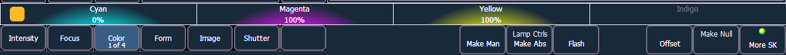

On Gio, Gio @ 5, Ion Xe, or ETCnomad using a Programming Wing, information on what the encoders are currently controlling can always be found in the mini encoder status display, even when the Encoder Controls Display is closed. This display is found above the softkeys in the CIA.
Use the Parameter Category hardkeys to choose which parameters are currently available on the encoders.

Some fixtures have more parameters than can be displayed on one encoder page. The number of. pages for each category is displayed at the bottom of the Parameter Category softkey. To view the other pages, simply press the button to advance the pages or hold the button and press a number key to go directly to the page you want to access.